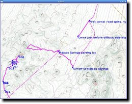

![[San Francisco/OpenStreetMap screenshot]](screenshots/sf-ss.jpg)
{kind=link}
![[Trails above Lexington reservoir/USGS screenshot]](screenshots/lexington-ss.jpg)
![[PyTopo for Linux]](topoicon.jpg)
PyTopo is a Python-gtk script which interprets local tiled map data (for instance, from a Topo! data CD), and displays it in an interactive viewer, where you can scroll to adjacent maps, switch between resolutions, or produce a map image for printing or editing.
Why does PyTopo exist? There were several existing Linux mapping applications which take data from online web sites or roads databases, and others which take GPS data and correlate it with online maps. But I typically need maps when I'm travelling and don't have net access! I couldn't find any apps that would display data for any location, without requiring a GPS, using local map sources with no net connection needed. (There are a few possibilities but nothing that really solves the problem: GPSdrive claims it can do local mapping now, but I've tried three versions with no luck getting it to run at all. And there's a neat little program called TangoGPS that can download and show OSM maps, but it has a difficult interface that's optimized for cellphones.)
Download: The current version is PyTopo 1.1.
1.0 got all kinds of cool new stuff, including map dragging, more user interface for zooming and saving sites, track logs saved in ~/Tracks, etc. so it's usable without a keyboard, e.g. on a tablet. Embarassingly, we were so intent on adding new features that we never got around to making a formal release! So 1.1 has all those features, plus a lot of reliability enhancements to make everything work more solidly.
The big news in 0.9 is the new OSM Map Collection, which can download map tiles from the OpenStreetMap project. (Aside: this is a great project, so if you're interested in mapping, join up and help add to the public map!) You no longer need your own big set of map data; just set up an OSM Map Collection with appropriate download URL, point at a longitude/latitude and specify the zoom level, and pytopo will download the tiles you need. These are cached forever (unless you delete them yourself), so once you've downloaded an area you're good to go offline and your maps will still work.
The latest and greatest is always in the current SVN version: PyTopo is hosted on Google Code.
There's an experimental MeeGo package for anyone interested in trying it, and I'd be interested to know if it works on other RPM platforms as well: PyTopo-1.0-1-beta1.noarch.rpm.
The first time you run pytopo, it will create a configuration file, typically ~/.config/pytopo/pytopo.sites (if it can't create that it will fall back to ~/.pytopo instead).
You might want to take a look at the file: this is where you can add additional map collections or sites you visit frequently. By default, pytopo will download OpenStreetMap tiles to ~/Maps. Of course, you can change that. See the PyTopo File Formats page for more details.
pytopo -p will print out a list of known sites.
With the initial default configuration you'll just have a few cities like
san-francisco, new-york, london, sydney;
this is mostly to show you how to add your own points of interest.
| Left, Right, Up, Down | Scroll the map in the indicated direction. |
|---|---|
| +/=, - | Zoom in to the 7.5 minute series, or out to the 15 minute series. (Zooming isn't supported in other map formats yet.) |
| s | Save the current map to a file under $HOME/Topo |
| Space | Print (to standard output) the current coordinates of map center. |
Clicking in the map displays the coordinates of where you clicked, as well as the distance and bearing from the last clicked point.
Note that dragging in the map doesn't move the map. You need to use arrow keys to move around. I do plan to implement dragging at some point, and I don't think it's that hard; I've just been more concerned about getting the OSM collections working first.
Usage: pytopo [trackfile...] site_name
pytopo [trackfile...] start_lat start_long collection
pytopo -p
Use degrees.decimal_minutes format for coordinates.
Set up site names in ~/.pytopo
Print list of known sites with pytopo -p
Track files are GPX files which may contain track points and/or waypoints;
multiple track files are allowed.
|
|  |
|
| San Francisco from the default setup. | Several tracklogs and waypoints hiking to Castle Peaks in Mojave National Preserve, using OpenCycleMap data | Tacklogs and waypoints above Lexington reservoir near Los Gatos, using USGS/Topo! dara |
Aside from OpenStreetMap data, pytopo can use local map data on disk or CD.
The Topo! local area and specific park map packages sold in camping/hiking stores (sometimes under the aegis of National Geographic) are reasonably priced as a source of map data. They come with Windows software, but Linux users can ignore the software and use the data files, which are standard GIF, named in a fairly straightforward way. They're a good source of US map data.
Caution: the Topo! Back Roads Explorer and the statewide explorer collections are not in this friendly format. They use large data files in a proprietary ".tpq" format. Tom Trebisky has analyzed the format and has written an extractor, and he also has a C GTK viewer for this format. (Eventually I hope to integrate direct support for them into pytopo as well.)
You can buy map bits directly from the USGS, but they have a hefty setup fee so it's not cost effective unless you're buying quite a lot.
For some areas, you can download topo maps; for instance, for California you can get maps in TIFF format from the California Spatial Information Library. You still have to split up the maps into maplets, though; if you have ImageMagick, you can use a command like
convert in-map.jpg -rotate 90 -crop 300x300 -repage +0+0 out-map%02d.jpg
Note: previously I included -trim as part of that line, and a lot of pages you'll find googling for image splitting will tell you to use -trim. Don't: it will give you maps of inconsistent sizes, and pytopo has no way to tell where the origin of the map should be.
A map split this way can be read with PyTopo 0.5 or later. Maps downloaded as PDF (such as USGS geologic maps) might work in imagemagick, but if not, try converting them to a raster format before splitting, using a program like GIMP or a command like
gs -sDEVICE=jpeg -r300 -sOutputFile=output-map.jpg input-map.pdf
I wrote some older commandline helper scripts, but honestly, I don't use them myself and don't vouch for them. I list them here merely on the chance that someone might find one of them a useful building block: